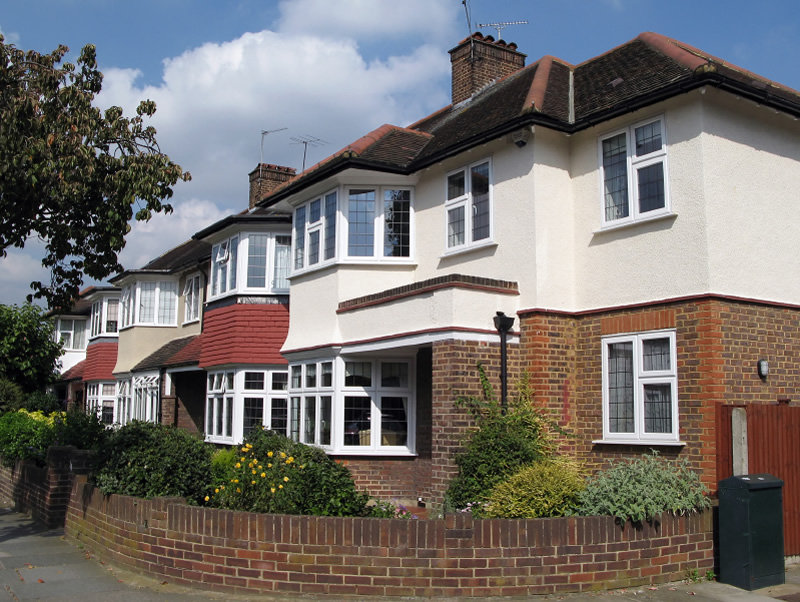

59 Stroude Rd, Bath, TA24 1ZQ
£300,000

Attractive three bedroom semi-detached family home situated within 0.5 miles of Petts Wood station with fast trains to they bathroom with separate WC. Additional features include double glazing, gas central heating and a well presented interior
Type: House
Bedrooms: 2
Date Added: 1 March 2016